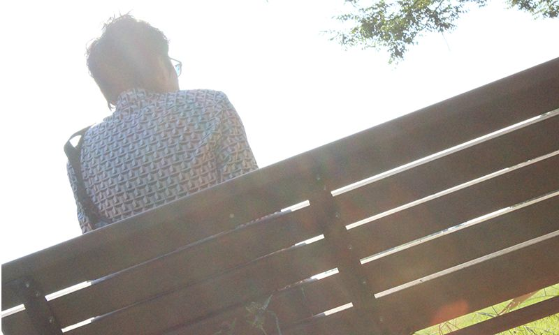

Saitone（サイトーン）
国内に於いて早くからGameboy-Chiptuneをリリースしてきた一人。8bit音源を用いて8bitに依存しない未知の音楽を開拓しようと試行錯誤している。2008年1st Album 『Overlapping Spiral』をリリース。ジャンルを超えたリミックスワークや各種コンピレーション、海外公演を行うなど多方面に活動中。
日本チップチューンの黎明期から常に最前線を走り続ける生ける伝説「Saitone」
第4回はチップチューンという言葉が日本で広まる前からゲームボーイを使った活動を続けるレジェンド、Saitoneさんです。 4ヶ月に渡ったESC TRAX 連続リリース&インタビューもついに最後！曲作りやライブスタイルなど貴重な情報が満載です！
「自身のホームページの掲示板で、ある方から「nanoloop」を教えてもらったのがきっかけ」
- ーー日本でチップチューンが確立される前から活動されているSaitoneさんですが、元々はどういった経緯でチップチューンを作るようになったのでしょうか？
- チップチューンをやる前から作曲活動自体はやっていました。
クラフトワークやYMOのような80年代のテクノを聞いたのがきっかけで、バンドとかではなく、いきなり一人でシンセサイザーで作り始めています。
昔はシンセが発展途上で、テクノロジー的にどんどん移り変わっていた時期だったので、何度もいろんなシンセを買い替えて作曲をしていました。 - 2002年ごろだったと思いますが、自営業ということもあって自前のホームページをもっていました。
そこで立てていた掲示板で曲作りに関する交流を様々な人と行っていたところ、ある方から「nanoloop」を教えてもらったのがきっかけでチップチューンを作るようになりました。 - ーーその当時はゲームボーイで音楽を作るというのは今以上に未知の状態だったように思うのですが、どこに興味を持ったのでしょうか？
- 色々機材を買っていた中で、elektronが出しているシンセで「sid station※」というのを持っていたんですね。
元々その音色が好きで、それで曲は作ってましたが、当時はまだチップチューンというものがあるという事は知りませんでした
- 当時、シンセサイザーはいかにリアルな音色を出すかというところを追い求めていた時代でしたが、そんな中、SIDやゲームボーイ等の色気のない電子音が鳴るという真逆の方向性に強烈に惹かれました。
なので、Chesterfieldさんという方から「LSDj」を教えてもらって、そちらも入手しました。 - LSDjはフレーズを作ったりメロディを作ったりがコマンドも豊富で使いやすかったです。
LSDjとnanoloop、それぞれ並行して曲を作るようになりましたね。
- しばらくどちらも同じくらい使っていましたが、途中からnanoloopがメインになりました。
「音で遊ぶツール」としては、偶発的な効果を狙いやすかったり、waveチャンネルをつかったFM変調での音色作りができるnanoloopのほうが自分の肌には合っていたんですね。
※sid station
8ビットコンピューター「コモドール64」の音源チップ「SID」を搭載したシンセサイザー。
現在は生産終了。
nanoloop
パラメータがビジュアル化されているため偶発的な音色やパターンを作りやすい
LSDj
パラメータが数値化されているため狙った音程や正確なフレーズを打ち込みやすい
楽曲の素材を作るツールとしてのゲームボーイ
- ーー現在もゲームボーイのみで制作していらっしゃるのでしょうか？
- いえ、そのうちリミックスの依頼も徐々に受けるようになり、ゲームボーイのシーケンサーのみでは難しくなってきたので、徐々に作曲環境としてPCも使うようになっていきました。
WindowsのPCでAbleton Liveを使って楽曲を組んでいます。 - ーーPCとゲームボーイはどのように使い分けているのでしょうか？
- 今ではゲームボーイは楽曲の素材を作るツールとして使うようになっています。
ケースバイケースですが、単独の音色を出すのに使うこともあれば、ある程度フレーズをゲームボーイで打ち込んで素材として使うこともあります。
フレーズを打ち込むのはゲームボーイ特有のグルーヴが欲しくて、パーカッションのパートなどでよくやりますね。
いろんな断片をPCに吸い上げて、そこから曲として組み立てていく感じです。 - ーーSaitoneさんの楽曲は、フロアで聴くと非常に気持ちのいいキックが特徴だと思うのですが、あれもゲームボーイで音作りをされているんでしょうか？
- はい、あれもゲームボーイで音を作っています。
ゲームボーイのみで楽曲を完成させるとどうしてもキックの音を1つ出すのに、1チャンネルのみを使いがちになりますが、自分の場合は4chをフルに使って音作りをすることが多いです。 - 他に、鍵盤を使って作ったコードやメロディをゲームボーイの音色に落とし込んで、わざとチープにしたりもします。
- ーーやはりこれは、ゲームボーイ実機での鳴り方に対するこだわりだったりするんでしょうか？
- ゲームボーイで音色を作るのは、実機の音色へのこだわりというよりは、それまでゲームボーイのみでやっていた時から作り込んできた自分の中での「定番の音色」と言うものが固まってきたからですね。
それを使うと、自分の音楽性を出しやすい。 - ーー曲作りで気をつけていること等はありますでしょうか？
- なるべく同時にたくさんの音がならないように、ですかね。
音の縦軸を重ならないようにする、と言いますか、 例えばピアノとギターとスネアが同時に鳴って音の厚みが出過ぎてしまう、といったことを避けるように心がけているつもりです。
ゲームボーイ単体でやっていた時の影響があるのか、同時発音数は気にしていますね。
特に、リズムのパートはなるべく同時発音数が1になるように気をつけています。
その分、楽曲の時間の流れと言うか、横軸に対してどういう流れを組んでいくかというところに注力しています。
- あとは、ミックスですかね。
チップチューンは音色の特性上、どうしても遠くで鳴っているものと近くで鳴っているものとの違いを出すのが難しいと感じています。
それもひとつの良さだと思いますが、このコントラストをいかに付けるかと言うところも気を使いますね。
「ライブではその場でフレーズを組み合わせています。」
- ーーライブの時はサンプラーを操作する姿が印象的ですが、どういったスタイルで演奏されているのでしょうか？
- 曲を何小節ごとにバラしてサンプラーに入れておいて、その場でフレーズを組み合わせています。
このスタイルだと、BPMを変えたり、構成を少し変えたりできるので、スケジュールが押したりしても融通が効くのでいいんですよ。
ゲームボーイだけだとどうしても流しっぱなしになってしまうので。 - 昔はnanoloopのみで、パターンをその場で組み合わせながらのライブもやったことがありましたが、パターンが数値の羅列で分かりにくくて…
ごちゃごちゃになって覚えきれないので、紙にメモして見ながらやったりもしました。 - ーーライブの時に気をつけていること等はありますか？
- 自分の曲は少し分かりにくいと思っているので、いつもどういった構成で楽曲を聞かせようか、試行錯誤しています。
徐々にテンポをあげてわかりやすい曲にシフトしていく、といった構成を試したりもしますね。
- 昔はアップテンポな曲が多くて、お客さんが縦に跳ねるような感じでのってくれていた事が多かったんですが、 最近は徐々にテンポの遅い曲が増えて、電車に揺られて寝ているようなリズムの取られ方をすることが増えたと思います。

今回のリリースについて
- ーー今回のリリース「Keepsake」についてのコンセプトなどをお聞かせ下さい。
- 過去にライブで使ったことがあった楽曲の中から、今まで発表していなかったものを今の気持ちをもとに再構成してまとめた作品になっています。
- どの曲も色々と思い入れのあるライブでプレイした楽曲です。
海外に行って演った時とか、すごく盛り上がった時とか。
そのライブの「記念」となる作品ということで「Keepsake（記念品）」と名付けました。
- あ、辞書的には「形見」とかの意味もあったりするんですが、別に最後の作品というわけではないですからね(笑)
- プレイした時期はバラバラですが、一番古いものだと5年以上前かな？
最近のものもあるんですけど、原型がそれだ、というだけでだいぶ構成はし直していますね。
制作スタイルとしてパーツとパーツで組んでいるため、他の曲から持ってくるというのがやりやすいんですよ。
2曲だったものを1曲にしたりなど、ほとんど素材として使っています。
あとは全体的にメロディラインを強めに作ることを重視しました。
- 01 - daydream
- この曲は作る前、諸事情で入院していたんですよ。やることがなくて、寝ているのか起きているのかわからなくなる時があって。
その時の記憶が元になってできたので「daydream」とつけました。
これが一番古い曲ですかね、最後にプレイしたのはBlip Festivalだったと思います。 原型は既にyoutubeにもあがっていますが、今回のリリース用に整えました。POPSコードを使ったスタンダードな曲ですね。 - 02 - kaleidoscope
- これはワリと最近ですね、ここ2〜3年くらいの間にライブでプレイした3つくらい別の曲を合わせて1つにした楽曲です。
別の曲だったものをキーや音色を統一して1つにしているので、それぞれのパートへ展開が変わっていく様子から、「kaleidoscope(万華鏡)」と名付けました。 - 03 - rhythm&brake
- これも原型はBlip Festivalでプレイした楽曲ですね。
この曲は作るのが大変でした…打ち込み作業に苦労した一曲です。 - 04 - time lag
- 最近ライブでプレイした2曲を合わせて1つにした曲です。
元の曲もそれぞれ単体でも気に入っていたのですが、展開が薄味だったので1つにまとめてみました。
裏拍のリズムで始まって、途中でいつの間にか表拍に変わって一緒になる、という意味で「time lag」と名付けました。
- ーーありがとうございました、今後の展望等があれば聞かせてください。
- まだリリース時期は決まっていませんが、海外のネットレーベルの為にEPを製作中です。
あとは、まだ詳細は決まっておりませんが11月にはライブの予定があります。
ライブや楽曲などもオファーがあればどんどんやって行きたいなと思っています。
【Saitone - discography】

インタビューリスト
編集・テキスト：ESC TRAX／撮影：Terminal Connect